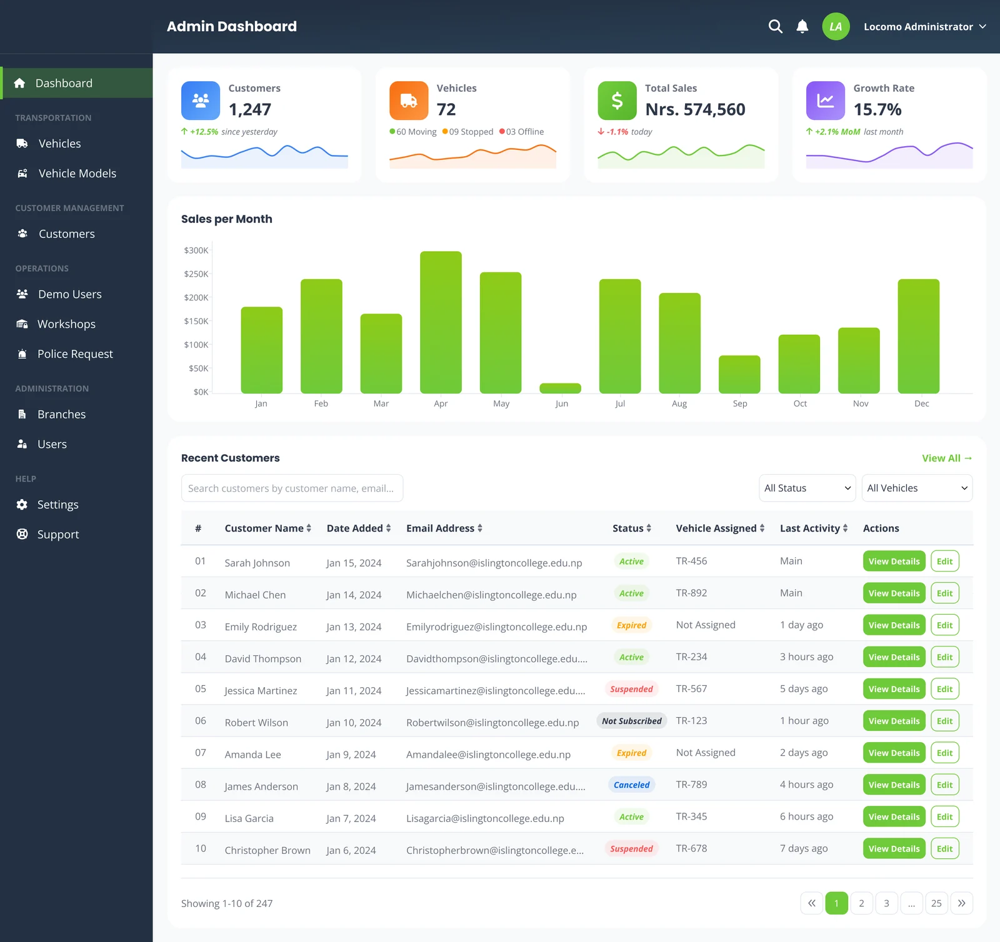
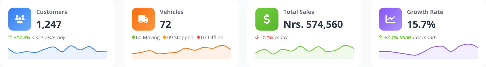
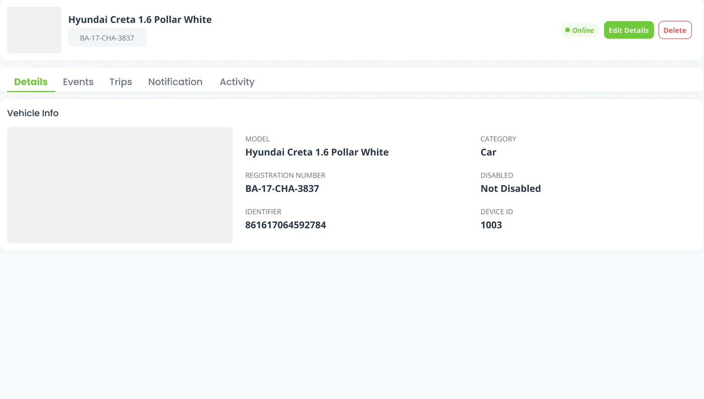
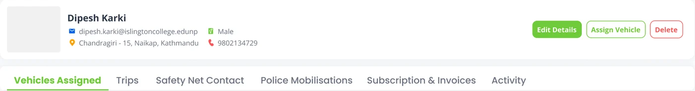
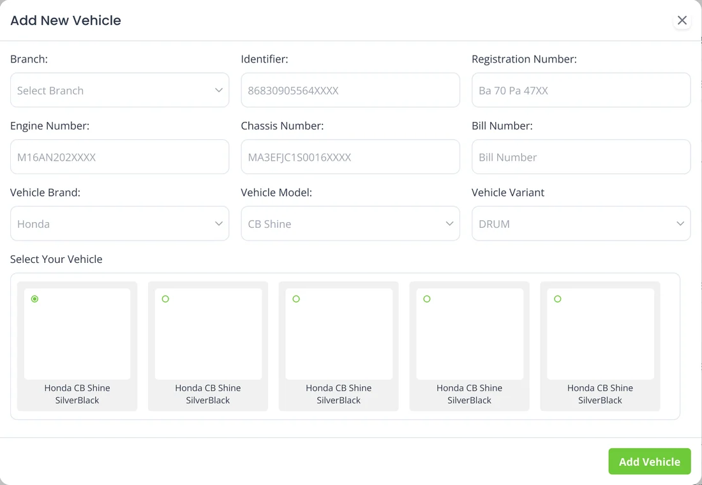
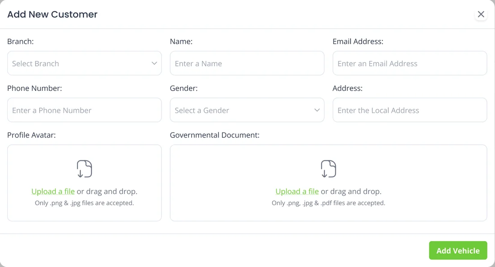
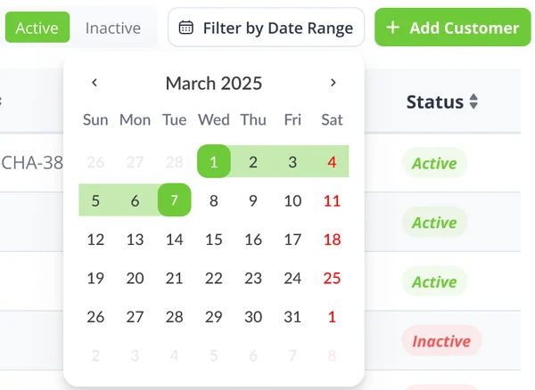

Every vehicle is a timeline. The admin's job is to read them.

The vehicle card doesn't stop at a total. It splits the fleet into moving, stopped and offline, which is the first thing anyone watching a tracker wants to know.
Figures are sample data in the design.

A vehicle's page keeps three separate histories under one tab bar: what the car did, what the system said about it, and what people changed. Keeping them apart stops a speeding alert being buried under a device update.
My reading of the Events, Notification and Activity tabs
The Events tab lists one car's morning on 31 December 2025, newest first. Laid out on a line, the same entries tell a story: left home, sped, parked, set off again.
Redrawn from the first eight entries in the Events list, oldest first and evenly spaced rather than to scale. Green marks when the car was running.
The customer record goes further than a fleet tool needs to. Next to the vehicles, it keeps a safety-net contact, police mobilisations and a government document. The sidebar has a Police Request page too.
Interpretation: Locomo is a safety service as much as a tracker



The fleet split, the three histories and the safety tabs are the ideas worth keeping. These are the next fixes.